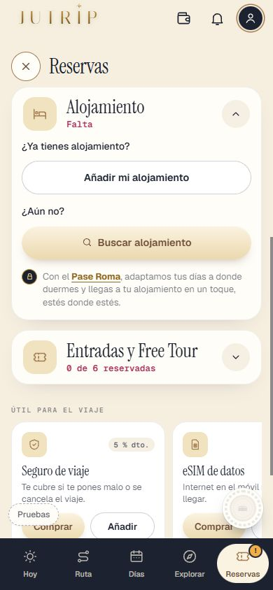
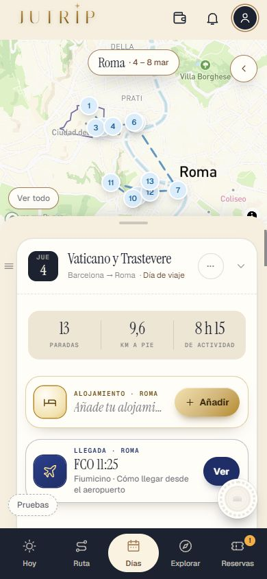
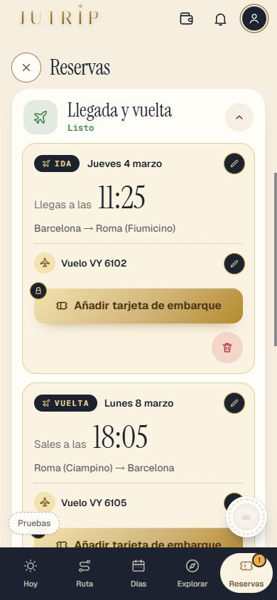
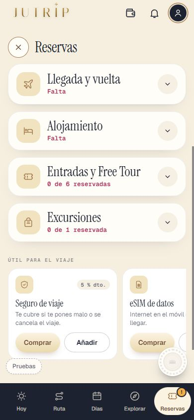
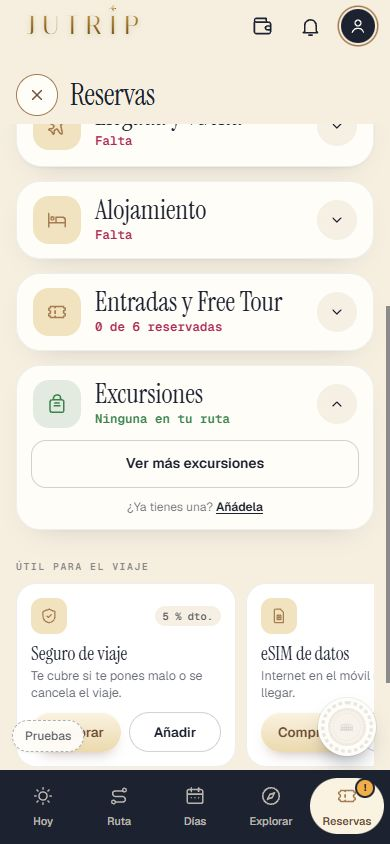
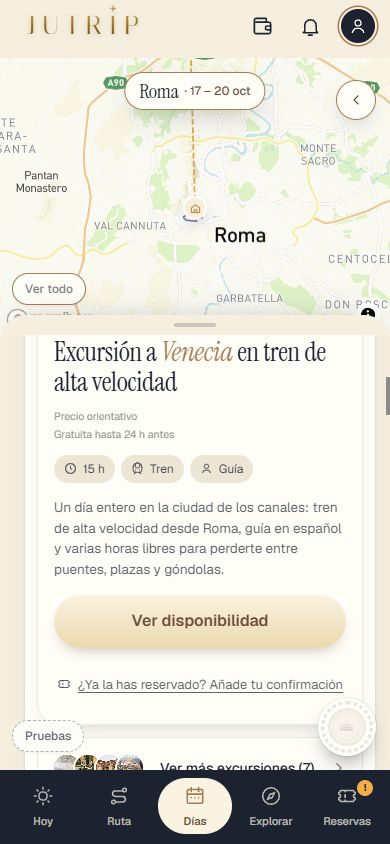
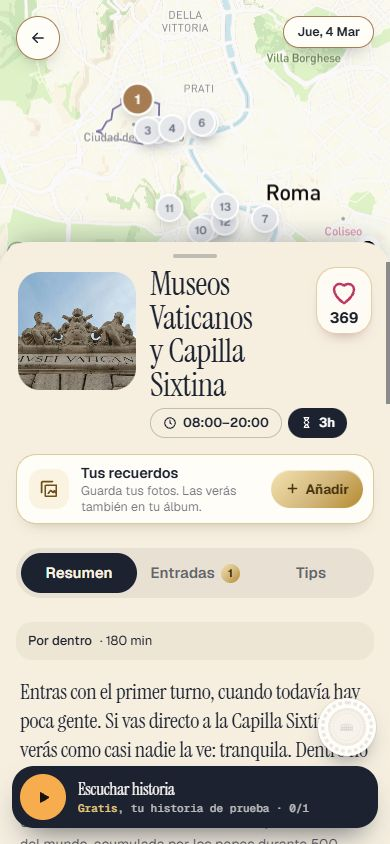
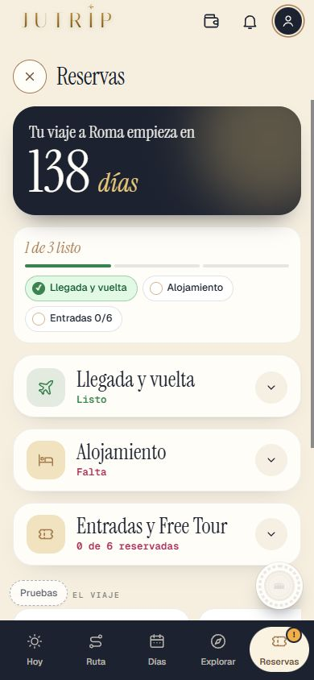
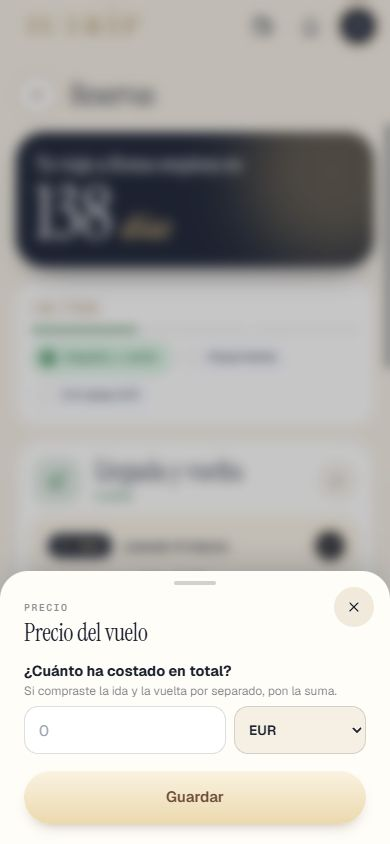
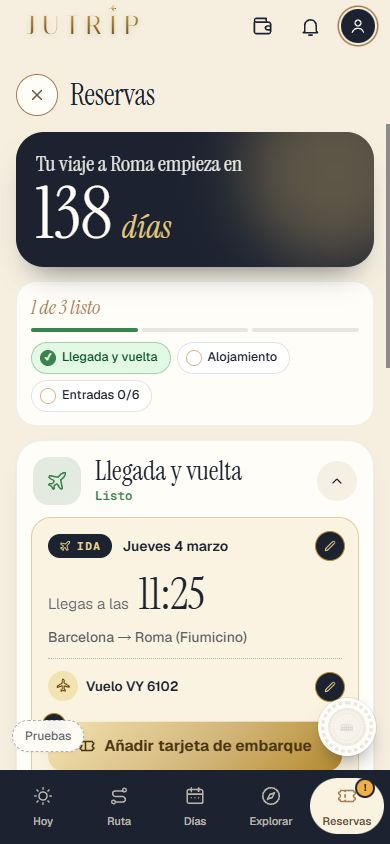

Lo que has encontrado en el móvil el 1-nov: mover paradas entre franjas, los avisos de horario, las excursiones en RESERVAS, el día de llegada y retoques. Marca cada punto en tu teléfono cuando lo hayas comprobado (se guarda en este navegador). Abajo, la tabla de los sitios «por dentro y por fuera» y «solo por dentro» para que la revises.
«Por dentro y por fuera»: si está cerrado, el aviso dice que puedes verlo por fuera. «Solo por dentro»: el aviso solo dice que posiblemente esté cerrado. Si algún sitio está en la lista que no toca, dímelo.
| Coliseo | 08:30-16:30 | tiene texto «por fuera» en los datos |
| Foro Romano y Palatino | 09:00-16:30 | tiene texto «por fuera» en los datos |
| Panteón | 09:00-19:00 | tiene texto «por fuera» en los datos |
| Basílica de San Pedro | 07:00-20:00 | tiene texto «por fuera» en los datos |
| Castillo de Sant'Angelo | 09:00-19:30 | tiene texto «por fuera» en los datos |
| Altar de la Patria | 09:30-19:30 | tiene texto «por fuera» en los datos |
| Mercados de Trajano | 09:30-19:30 | tiene texto «por fuera» en los datos |
| Cúpula de San Pedro | 07:30-17:00 | tiene texto «por fuera» en los datos |
| Iglesia del Gesù | 07:30-12:30 y 16:30-19:30 | tiene texto «por fuera» en los datos |
| Iglesia de San Luigi dei Francesi | 09:30-12:45 y 14:30-18:30 | tiene texto «por fuera» en los datos |
| Ara Pacis | 09:30-19:30 | tiene texto «por fuera» en los datos |
| Iglesia de Santa Maria sopra Minerva | 07:00-19:00 | tiene texto «por fuera» en los datos |
| Iglesia de San Ignacio de Loyola | 09:00-19:00 | tiene texto «por fuera» en los datos |
| Iglesia de San Pietro in Vincoli | 08:00-12:30 y 15:00-18:00 | tiene texto «por fuera» en los datos |
| Termas de Caracalla | 09:00-16:30 | tiene texto «por fuera» en los datos |
| Basílica de Santa María la Mayor | 07:00-18:45 | tiene texto «por fuera» en los datos |
| Iglesia de Santa Maria in Trastevere | 07:30-21:00 | tiene texto «por fuera» en los datos |
| Basílica de San Juan de Letrán | 07:00-18:30 | tiene texto «por fuera» en los datos |
| San Pietro in Montorio y Tempietto de Bramante | 10:00-18:00 | tiene texto «por fuera» en los datos |
| Basílica de Santa Cecilia in Trastevere | 10:00-12:30 y 16:30-18:30 | tiene texto «por fuera» en los datos |
| Santa Maria del Popolo | 08:30-09:45 y 10:30-12:00 y 16:00-18:00 | tiene texto «por fuera» en los datos |
| Trinità dei Monti | 10:15-19:45 | tiene texto «por fuera» en los datos |
| Museos Vaticanos y Capilla Sixtina | 08:00-20:00 | se visita por dentro y no tiene texto «por fuera» |
| Galería Borghese | 09:00-19:00 | decidido por Eric (1-nov) |
| Bioparque de Roma | 09:30-17:00 | se visita por dentro y no tiene texto «por fuera» |
| Galería Nacional de Arte Moderno | 09:00-19:00 | se visita por dentro y no tiene texto «por fuera» |
| Museos Capitolinos | 09:30-19:30 | se visita por dentro y no tiene texto «por fuera» |
| Basílica de San Clemente | 09:00-12:30 y 14:00-18:00 | se visita por dentro y no tiene texto «por fuera» |
| Domus Aurea | 09:00-16:30 | se visita por dentro y no tiene texto «por fuera» |
| Iglesia de Santa Maria della Vittoria | 08:00-12:00 y 16:00-18:00 | se visita por dentro y no tiene texto «por fuera» |
| Villa Farnesina | 09:00-14:00 | se visita por dentro y no tiene texto «por fuera» |
| Mercado de Testaccio | 07:00-15:30 | se visita por dentro y no tiene texto «por fuera» |
| Palazzo Doria Pamphilj | 09:00-19:00 | se visita por dentro y no tiene texto «por fuera» |
| Catacumbas de San Calixto | 09:00-12:00 y 14:00-17:00 | se visita por dentro y no tiene texto «por fuera» |
| Cementerio Protestante | 09:00-17:00 | se visita por dentro y no tiene texto «por fuera» |
| Cripta de los Capuchinos | 10:00-19:00 | se visita por dentro y no tiene texto «por fuera» |









